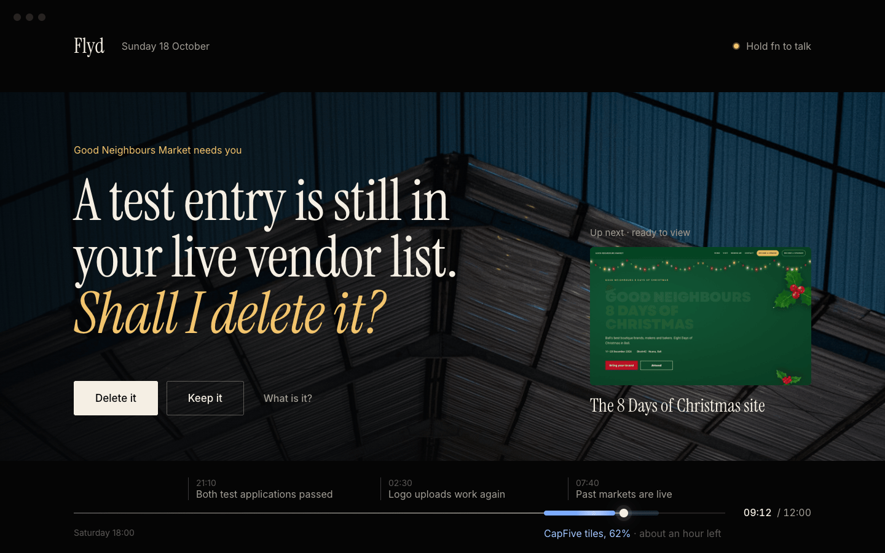
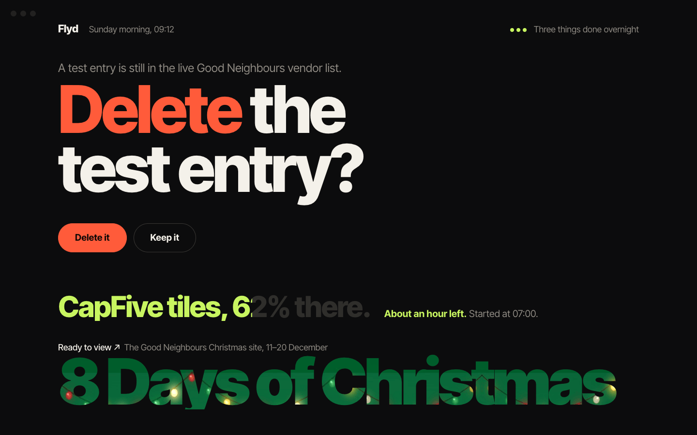
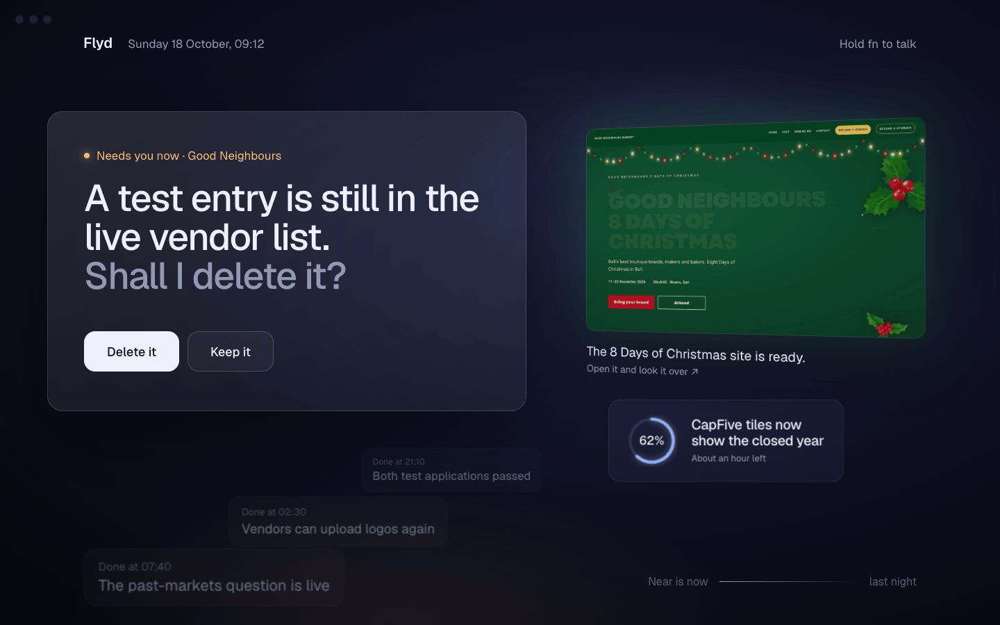
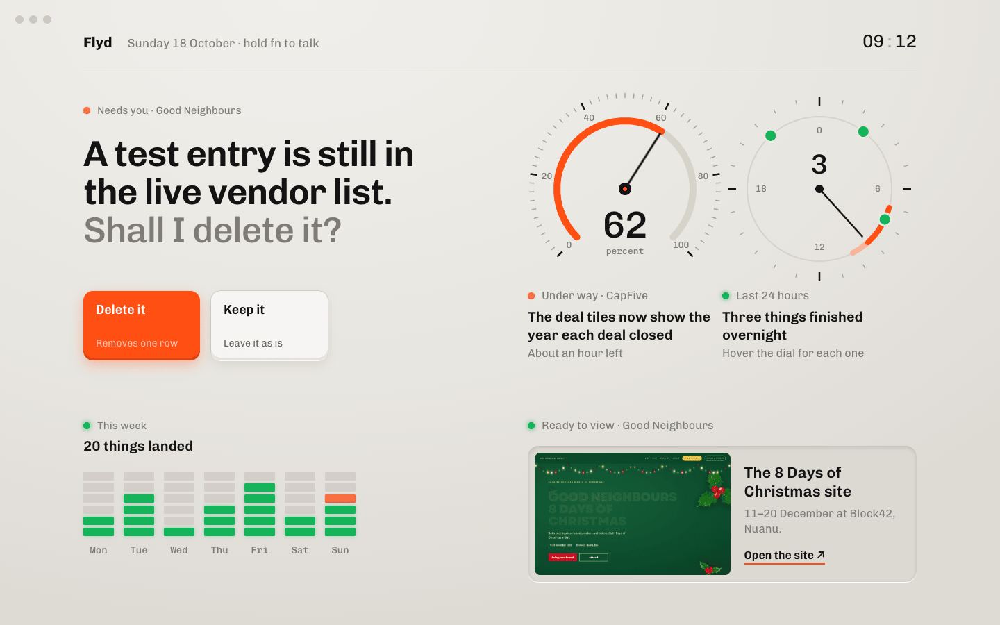
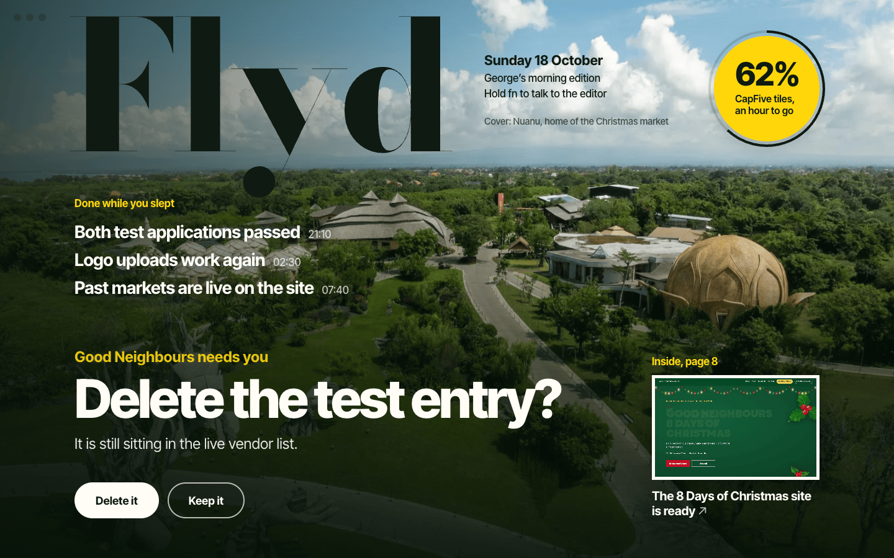
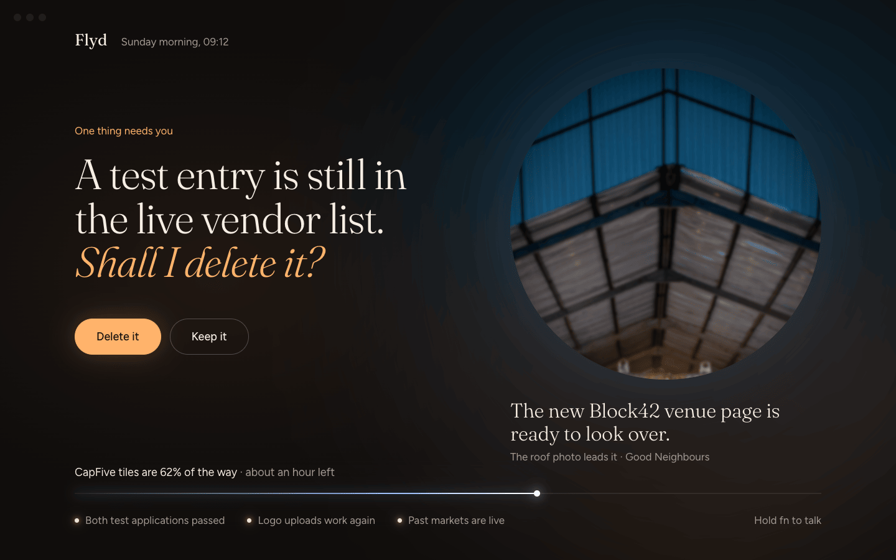
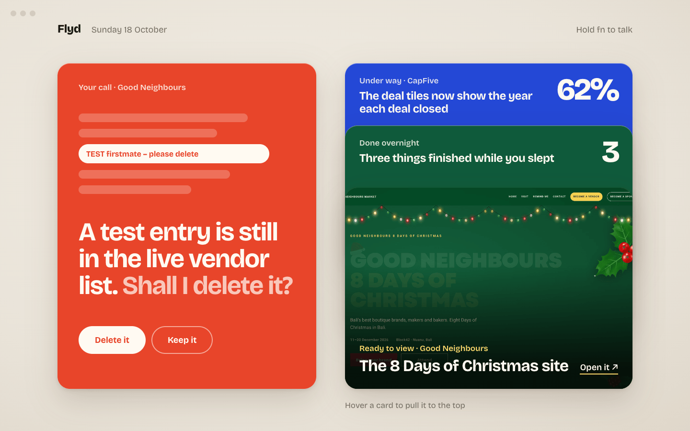
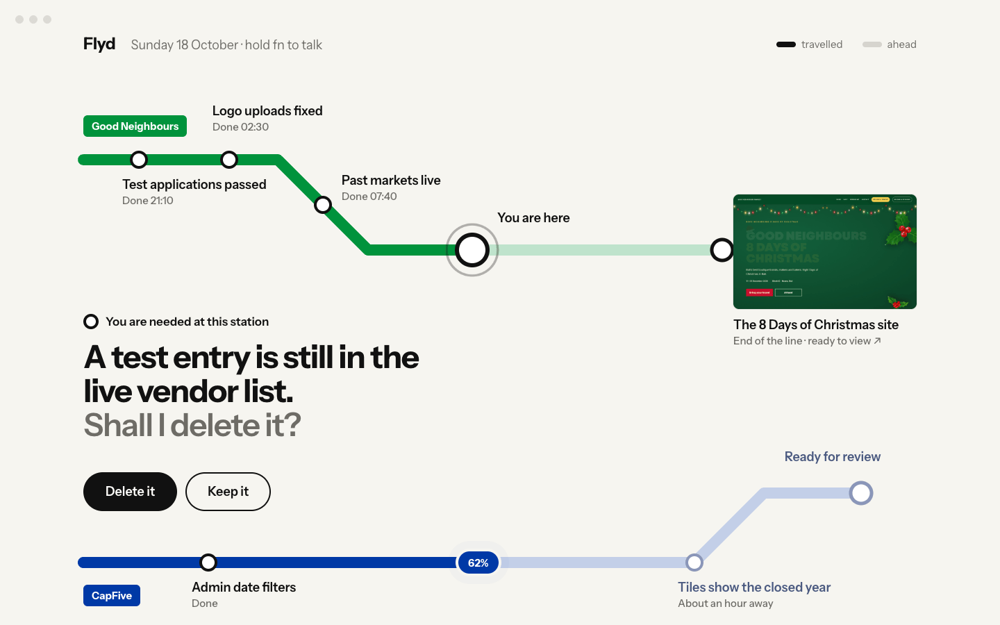
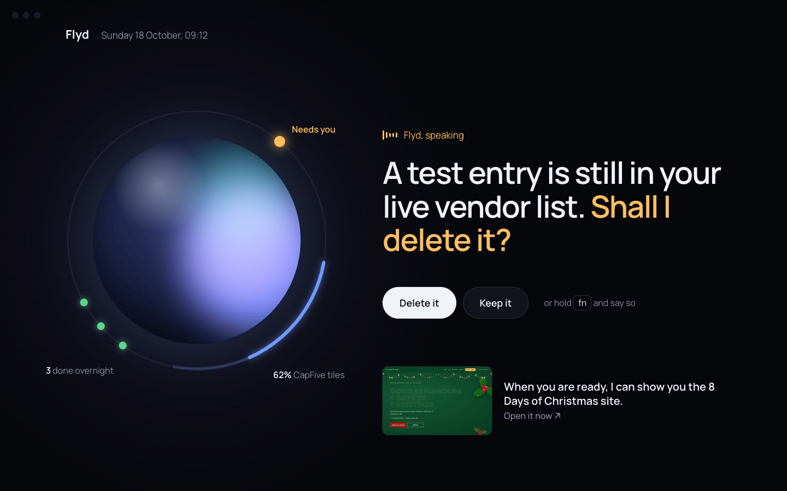
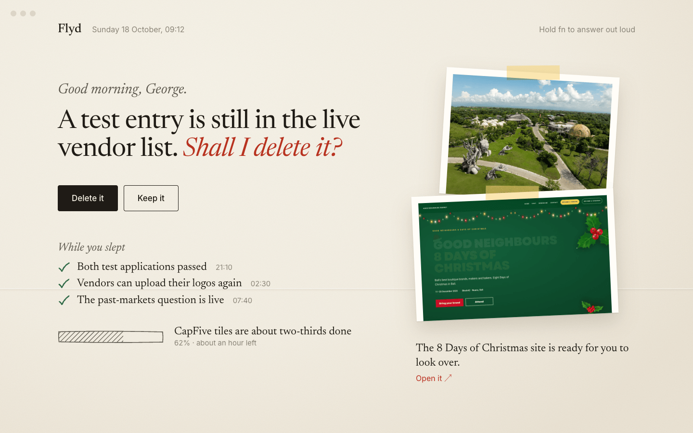

Ten directions for the Flyd desktop window, each built on one strong idea with big type, real imagery and data drawn as graphics. Every design shows the same Sunday morning: one decision for George, three things done overnight, the CapFive tiles at 62%, and a Good Neighbours artefact with its real image. Open any one at 1440 × 900 and hover around; each has small states of its own. Round one is here.

The window is a film frame. Letterbox bars hold the chrome, the picture holds the decision, and last night plays back as a video scrubber with the running job still loading.

Type is the data. Size is priority, the job’s progress is poured into its own letters, and the artefact’s title is cut out of the artefact itself.

Distance is time. What needs George stands nearest, the finished site floats behind it, and last night recedes into the haze. The room tilts with the pointer.

Every mark is a reading. A gauge for the running job, a 24-hour dial for the night, an LED meter for the week and two hardware keys for the call.

One magazine cover a morning, for one reader. Nuanu is the cover photo, the decision is the main cover line and the running job is the corner flash.

A Turrell room where everything is a light: a warm pool for the decision, a skylight that is the Block42 venue page, a horizon for progress and three small lamps.

A chief of staff hands George cards. The one to play lies face up; the rest form a wallet stack, each readable from its top edge and pulled up on hover.

A Vignelli subway map. Projects are lines, finished work is stations, track ahead is pale, George is the interchange and the running job is a train.

Flyd as a presence that speaks. The orb’s halo is the state of the work, and the words light up TV-style as Flyd says them.

A note on the desk: the question in red pencil, last night ticked by hand, the job hatched in graphite and two prints taped to the corner.